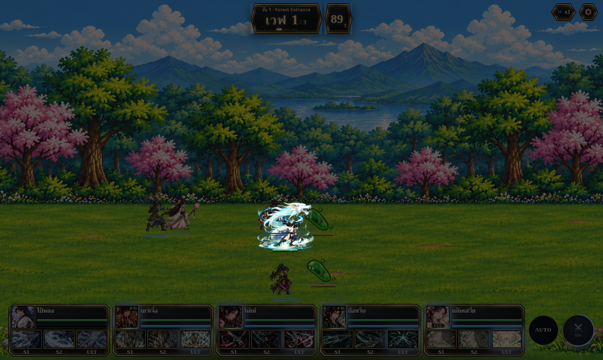
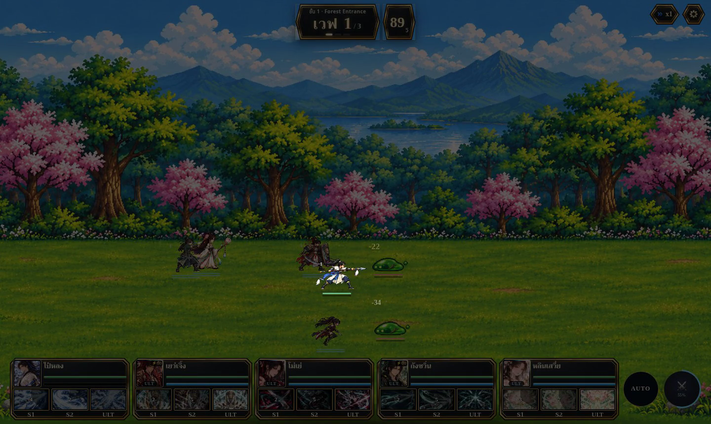

Ultimate — เอาแฟลชขาวทั้งจอออก
ภาพและคลิปจากเกมจริง Desktop1440×860 · ฉากดำต่อเนื่อง ตัวผู้ใช้กับ VFX อยู่ด้านหน้า ใช้ hit-stop/กล้องสั่นตามเดิม
รายงานตรวจการสร้าง white screen wash · คลิปเกมจริง · ภาพจริง · อ้างอิงฉากดำเดิม

อ้างอิงฉากดำเดิม
เกมจริงหลังแก้ · เฟรมจากคลิปที่2วินาทีMutationObserver ตรวจโหนดแฟลชขาวระหว่าง Ultimate จริง พร้อมนับเหตุการณ์ impact ภาพนิ่งใช้ตรวจ composition; คลิปและรายงานใช้ตรวจพฤติกรรมตามเวลา ไม่มี master merge หรือ deploy